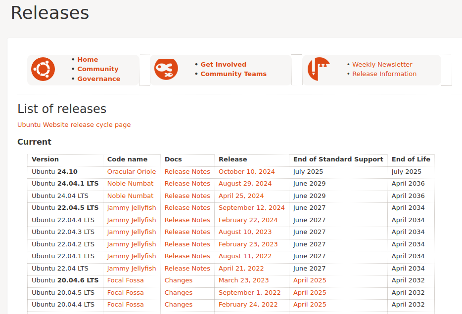
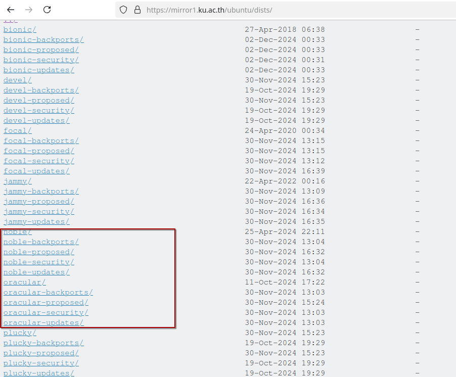
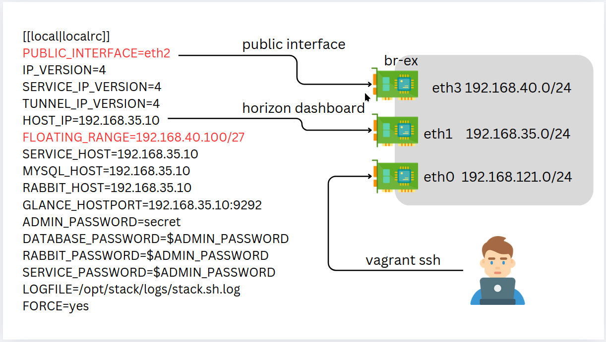
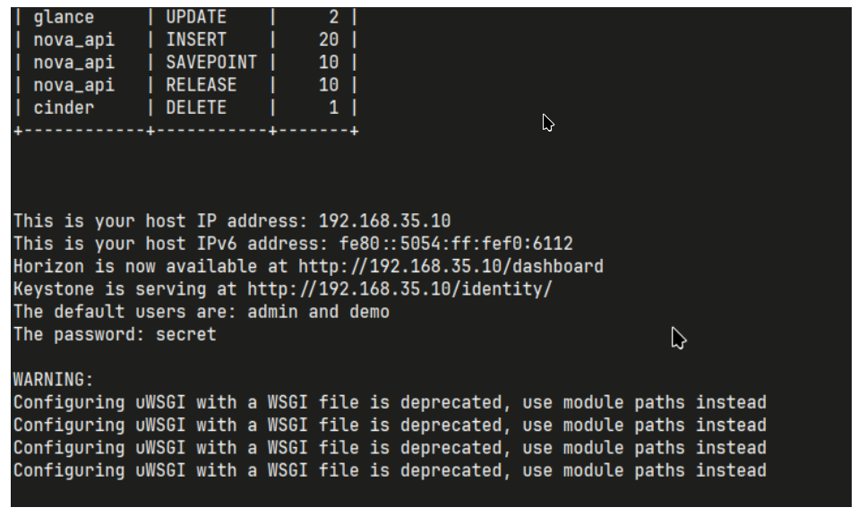
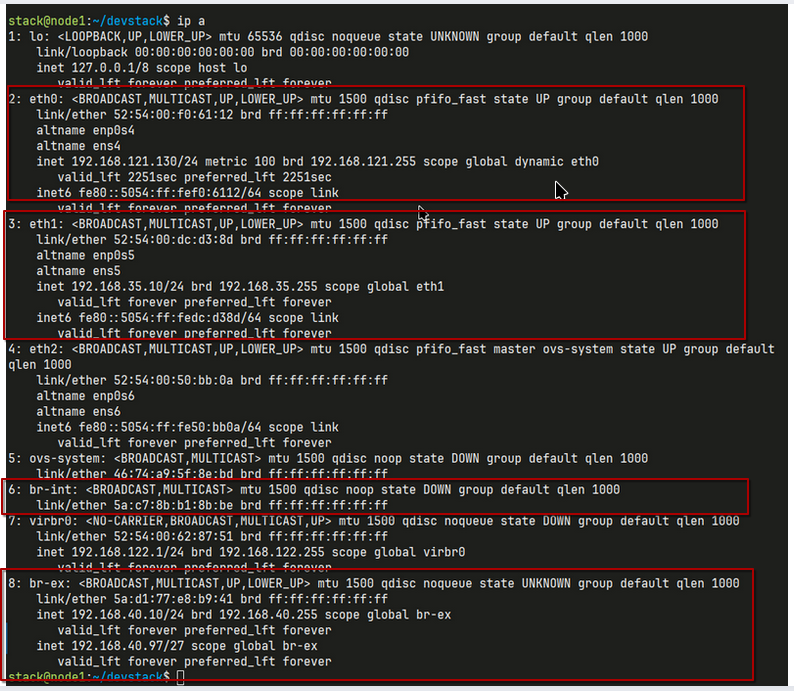
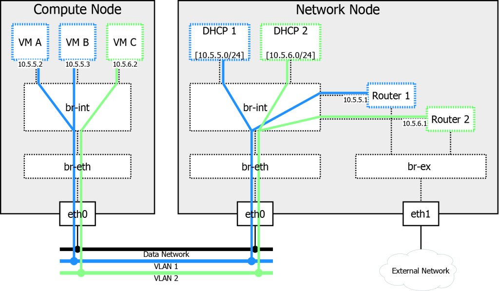

Study public network
ubuntu Version

Repository list

เปลี่ยน Vagrantfile 'bento/ubuntu-24.04'
# -*- mode: ruby -*-
# vi: set ft=ruby :
$script=<<-SCRIPT
sed -i 's/PasswordAuthentication no/PasswordAuthentication yes/g' /etc/ssh/sshd_config
systemctl restart ssh.service
SCRIPT
Vagrant.configure("2") do |config|
config.vm.box = "bento/ubuntu-24.04"
config.vm.define "node1" do |control|
control.vm.hostname = "node1"
control.vm.network "private_network", ip: "192.168.35.10"
control.vm.network "private_network", ip: "192.168.40.10"
control.vm.provider "virtualbox" do |vb|
vb.memory = "8192"
vb.cpus = 4
vb.customize ["modifyvm", :id, "--nested-hw-virt", "on"]
end
end
config.vm.define "node2" do |control|
control.vm.hostname = "node2"
control.vm.network "private_network", ip: "192.168.35.20"
control.vm.network "private_network", ip: "192.168.40.20"
control.vm.provider "virtualbox" do |vb|
vb.memory = "8192"
vb.cpus = 4
vb.customize ["modifyvm", :id, "--nested-hw-virt", "on"]
end
end
config.vm.provision "shell", inline: $script
end
สั่งคำสั่ง สร้าง server
kernel parameter
net.ipv6.conf.all.disable_ipv6 = 0
net.ipv6.conf.default.disable_ipv6 = 0
net.ipv6.conf.lo.disable_ipv6 = 0
net.ipv4.conf.default.rp_filter = 0
net.ipv4.conf.all.rp_filter = 0
net.ipv4.ip_forward = 1
เพิ่ม stack user
เพิ่ม สิทธิ์ sudo ให้แก่ user stack
เปลี่ยน Repository ของ Ubuntu
Types: deb
URIs: http://de.archive.ubuntu.com/ubuntu/
Suites: noble noble-updates noble-backports
Components: main restricted universe multiverse
Signed-By: /usr/share/keyrings/ubuntu-archive-keyring.gpg
Types: deb
URIs: http://security.ubuntu.com/ubuntu/
Suites: noble-security
Components: main restricted universe multiverse
Signed-By: /usr/share/keyrings/ubuntu-archive-keyring.gpg
- เปลี่ยน de.archive.ubuntu.com เป็น mirror1.ku.ac.th
update
Download โค้ด devstack
สร้าง ไฟล์ local.conf
[[local|localrc]]
PUBLIC_INTERFACE=eth2
IP_VERSION=4
SERVICE_IP_VERSION=4
TUNNEL_IP_VERSION=4
HOST_IP=192.168.35.10
FLOATING_RANGE=192.168.40.100/27
SERVICE_HOST=192.168.35.10
MYSQL_HOST=192.168.35.10
RABBIT_HOST=192.168.35.10
GLANCE_HOSTPORT=192.168.35.10:9292
ADMIN_PASSWORD=secret
DATABASE_PASSWORD=$ADMIN_PASSWORD
RABBIT_PASSWORD=$ADMIN_PASSWORD
SERVICE_PASSWORD=$ADMIN_PASSWORD
LOGFILE=/opt/stack/logs/stack.sh.log
FORCE=yes

เมื่อติดตั้ง เรียบร้อย

รายละเอียด ของ network ip a

ไฟล์ localrc สำหรับการติดตั้ง OpenStack (DevStack)
ไฟล์นี้กำหนดค่าพื้นฐานสำหรับการตั้งค่า OpenStack ผ่าน DevStack โดยเฉพาะในสภาพแวดล้อมสำหรับการพัฒนาหรือทดลองใช้งาน
คำอธิบายค่าพารามิเตอร์
การตั้งค่าเครือข่าย
-
PUBLIC_INTERFACE=eth2
กำหนดชื่ออินเทอร์เฟซเครือข่ายที่ใช้สำหรับเชื่อมต่อเครือข่ายภายนอก (External Network) -
IP_VERSION=4,SERVICE_IP_VERSION=4,TUNNEL_IP_VERSION=4
ระบุการใช้ IPv4 สำหรับเครือข่าย: -
การสื่อสารทั่วไป (IP Version)
- การสื่อสารบริการ (Service IP)
-
การสื่อสารผ่าน tunnel (Tunnel IP)
-
HOST_IP=192.168.35.10
ที่อยู่ IP ของโฮสต์ที่ใช้รัน DevStack -
FLOATING_RANGE=192.168.40.100/27
ช่วงที่อยู่ IP สำหรับ Floating IP เพื่อเชื่อมต่อ VM กับเครือข่ายภายนอก
การตั้งค่าบริการ
-
SERVICE_HOST=192.168.35.10
ระบุโฮสต์ที่ใช้รันบริการ OpenStack ทั้งหมด -
MYSQL_HOST=192.168.35.10
ระบุโฮสต์ที่ติดตั้งฐานข้อมูล MySQL -
RABBIT_HOST=192.168.35.10
ระบุโฮสต์ที่ติดตั้ง RabbitMQ (Message Queue) -
GLANCE_HOSTPORT=192.168.35.10:9292
ระบุ Endpoint ของ Glance สำหรับจัดการ Image
การตั้งค่ารหัสผ่าน
-
ADMIN_PASSWORD=secret
รหัสผ่านของผู้ดูแลระบบ (Admin) -
DATABASE_PASSWORD=$ADMIN_PASSWORD
รหัสผ่านสำหรับเข้าถึงฐานข้อมูล -
RABBIT_PASSWORD=$ADMIN_PASSWORD
รหัสผ่านสำหรับ RabbitMQ -
SERVICE_PASSWORD=$ADMIN_PASSWORD
รหัสผ่านสำหรับเข้าถึงบริการอื่น ๆ
การจัดการ Logs และการบังคับติดตั้ง
-
LOGFILE=/opt/stack/logs/stack.sh.log
ระบุไฟล์สำหรับบันทึก log ของ DevStack -
FORCE=yes
บังคับให้ DevStack ดำเนินการติดตั้งต่อแม้จะมีข้อผิดพลาดบางประการ
อ้างอิง
ความสำคัญของ br-ex ใน OpenStack สำหรับ External Network
อุปกรณ์ br-ex หรือ Bridge External ใน OpenStack มีบทบาทสำคัญในการเชื่อมโยงระหว่างเครือข่ายภายในของ OpenStack และเครือข่ายภายนอก เช่น อินเทอร์เน็ตหรือเครือข่ายองค์กร
ความสำคัญของ br-ex
-
จัดการ Floating IP
-
br-exช่วยให้ Virtual Machines (VMs) สามารถเข้าถึงเครือข่ายภายนอกได้โดยผ่าน Floating IP -
Floating IP เป็น IP เสมือนที่ถูกกำหนดให้กับ VM เพื่อให้สามารถเข้าถึงได้จากภายนอก เช่น อินเทอร์เน็ต
-
การกำหนดเส้นทาง (Routing)
-
เส้นทางการรับส่งข้อมูลจาก External Network ถูกกำหนดผ่าน
br-exไปยัง VM ผ่าน Neutron Service -
สนับสนุนการใช้งานทั้ง IPv4 และ IPv6
-
การเชื่อมต่อกับ Physical Interface
-
br-exทำหน้าที่เป็นสะพานระหว่าง Virtual Bridge กับ Physical Interface จริง เช่นeth2 -
ช่วยให้ทราฟฟิกจากเครือข่ายจริงถูกส่งต่อไปยังระบบเสมือน
-
บทบาทใน Network Node
br-exมักถูกใช้งานใน Network Node หรือ Controller Node เพื่อจัดการ External Network- เป็นส่วนสำคัญของโครงสร้างระบบ Networking ใน OpenStack
วิธีการตั้งค่า br-ex
- สร้าง Virtual Bridge
สร้างbr-exด้วยคำสั่งovs-vsctl:
-
เชื่อมต่อกับ Neutron กำหนด External Network ให้เชื่อมต่อกับ br-ex ใน Neutron Configuration
-
การกำหนด Floating Range Floating IP ต้องถูกกำหนดในช่วงที่รองรับกับเครือข่ายภายนอก เช่น
วิธีการคำนวณ Network Address จาก CIDR
ขั้นตอนการคำนวณ Network Address
-
แปลง IP Address เป็น Binary
-
แปลงแต่ละส่วน (Octet) ของ IP Address ให้เป็นเลขฐานสอง
-
ตัวอย่าง:
-
แปลง Subnet Mask จาก CIDR เป็น Binary
-
ใช้ค่า CIDR เพื่อระบุจำนวนบิตของ Subnet Mask
-
ตัวอย่าง
/27หมายถึง 27 บิตแรกเป็น1และบิตที่เหลือเป็น0 -
ทำ AND Operation ระหว่าง Binary ของ IP Address และ Subnet Mask
-
ทำ AND (
1 AND 1 = 1,1 AND 0 = 0,0 AND 0 = 0) ระหว่าง Binary ของ IP Address และ Subnet Mask -
ตัวอย่าง:
-
แปลงผลลัพธ์กลับเป็นเลขฐานสิบ
- แปลง Binary ผลลัพธ์กลับเป็นรูปแบบ Decimal
- ตัวอย่าง:
ข้อมูลพื้นฐาน
CIDR: /27
- หมายถึง Subnet Mask เท่ากับ
255.255.255.224(27 บิตสำหรับ Network, เหลือ 5 บิตสำหรับ Host) - จำนวน IP ทั้งหมดใน Subnet: \( 2^5 = 32 \)
Network Address
- ใช้ค่าเริ่มต้นของช่วง IP ใน Subnet
- 192.168.40.96 (เป็น Network Address ของ Subnet ที่ครอบคลุม
192.168.40.100)
Broadcast Address
- ใช้ค่า IP สุดท้ายของช่วง Subnet
- 192.168.40.127
ช่วง IP ที่ใช้ได้ (Usable Range)
- ลบ Network Address และ Broadcast Address ออก
- Usable Range:
192.168.40.97ถึง192.168.40.126
สรุปตาราง ip
| ประเภท | ค่า |
|---|---|
| Network Address | 192.168.40.96 |
| Subnet Mask | 255.255.255.224 |
| Broadcast Address | 192.168.40.127 |
| Usable IP Range | 192.168.40.97-126 |
| จำนวน IP ใช้ได้ | 30 IP |
br-ex ใน OpenStack: อธิบายอย่างละเอียด
br-ex เป็นชื่อของ bridge หรือ สวิตช์เสมือน หนึ่งใน OpenStack ซึ่งมีบทบาทสำคัญในการเชื่อมต่อเครือข่ายภายในของเครื่องเสมือน (VM) เข้ากับเครือข่ายภายนอก ในสภาพแวดล้อมของ OpenStack ที่ใช้ Open vSwitch (OVS) เป็นหลัก br-ex จะทำหน้าที่เป็นจุดเชื่อมต่อระหว่างพอร์ตเครือข่ายทางกายภาพ (physical network interface) และพอร์ตเครือข่ายเสมือนที่สร้างขึ้นสำหรับ VM ต่างๆ
ทำไมถึงเรียกว่า br-ex?
- br: ย่อมาจาก bridge หรือ สวิตช์ ซึ่งเป็นอุปกรณ์เครือข่ายที่ใช้เชื่อมต่อหลายๆ เครือข่ายเข้าด้วยกัน
- ex: อาจย่อมาจาก external หรือ exchange ซึ่งบ่งบอกว่า bridge นี้ทำหน้าที่เชื่อมต่อกับเครือข่ายภายนอก
บทบาทหลักของ br-ex
- เชื่อมต่อเครือข่ายภายในกับภายนอก: br-ex จะเชื่อมต่อพอร์ตเครือข่ายทางกายภาพของเซิร์ฟเวอร์ที่ติดตั้ง OpenStack เข้ากับพอร์ตเครือข่ายเสมือนที่สร้างขึ้นสำหรับ VM ต่างๆ ทำให้ VM สามารถสื่อสารกับโลกภายนอกได้
- จัดการการรับส่งข้อมูล: br-ex จะทำหน้าที่รับส่งข้อมูลระหว่าง VM ต่างๆ และระหว่าง VM กับเครือข่ายภายนอก โดยอาศัยหลักการทำงานของ bridge ในการตัดสินใจว่าจะส่งแพ็กเก็ตข้อมูลไปยังพอร์ตใด
- สร้าง VLAN: br-ex สามารถใช้ในการสร้าง VLAN (Virtual Local Area Network) เพื่อแยกกลุ่มของ VM ออกจากกัน ทำให้แต่ละกลุ่มสามารถสื่อสารกันได้ภายในกลุ่มโดยไม่รบกวนกลุ่มอื่นๆ
การทำงานของ br-ex (ในภาพรวม)
- เมื่อมีการสร้าง VM ขึ้นมา OpenStack จะสร้างพอร์ตเครือข่ายเสมือนขึ้นมาหนึ่งพอร์ต และเชื่อมต่อพอร์ตนี้เข้ากับ br-ex
- แพ็กเก็ตข้อมูลที่ส่งมาจาก VM จะถูกส่งผ่าน br-ex ไปยังพอร์ตเครือข่ายทางกายภาพที่เชื่อมต่อกับสวิตช์ภายนอก
- แพ็กเก็ตข้อมูลที่ส่งมาจากเครือข่ายภายนอกจะถูกส่งผ่าน br-ex เข้าไปยังพอร์ตเครือข่ายเสมือนของ VM ที่เป็นปลายทาง
สรุป br-ex เป็นองค์ประกอบสำคัญในสถาปัตยกรรมเครือข่ายของ OpenStack ที่ช่วยในการเชื่อมต่อและจัดการการรับส่งข้อมูลระหว่าง VM ต่างๆ และระหว่าง VM กับเครือข่ายภายนอก การทำความเข้าใจบทบาทของ br-ex จะช่วยให้ผู้ดูแลระบบสามารถแก้ไขปัญหาและปรับแต่งเครือข่ายของ OpenStack ได้อย่างมีประสิทธิภาพ
br-ex แตกต่างจาก Bridge อื่นๆ ใน OpenStack อย่างไร
br-ex เป็น bridge พิเศษใน OpenStack ที่มีบทบาทสำคัญในการเชื่อมต่อเครือข่ายภายในของเครื่องเสมือน (VM) เข้ากับเครือข่ายภายนอก โดยเฉพาะอย่างยิ่งในการส่งต่อ traffic จาก provider network ไปยัง physical network
เพื่อให้เข้าใจความแตกต่างได้ชัดเจนขึ้น ลองเปรียบเทียบ br-ex กับ bridge อื่นๆ ที่พบได้ทั่วไปใน OpenStack เช่น br-int และ br-tun
br-ex vs. br-int
- br-int: เป็น bridge ที่ใช้สำหรับเชื่อมต่อพอร์ตของ router (qg-xxx) เข้ากับ patch port ที่เชื่อมไปยัง br-ex ทำหน้าที่เป็นตัวกลางในการรับส่ง traffic ระหว่าง network provider กับ network tenant
- br-ex: ทำหน้าที่เชื่อมต่อ patch port จาก br-int เข้ากับพอร์ตทางกายภาพ (physical port) เพื่อส่ง traffic ออกไปยังเครือข่ายภายนอก
br-ex vs. br-tun
- br-tun: ใช้สำหรับการสร้าง tunnel หรืออุโมงค์สำหรับการสื่อสารระหว่าง node ต่างๆ โดยเฉพาะอย่างยิ่งในกรณีที่ต้องการสร้างเครือข่าย overlay
- br-ex: ไม่ได้เกี่ยวข้องโดยตรงกับการสร้าง tunnel แต่มีหน้าที่ในการส่งต่อ traffic ที่ผ่าน tunnel มาแล้วไปยังเครือข่ายภายนอก สรุป: br-tun เน้นเรื่องการสร้าง tunnel สำหรับการสื่อสารระหว่าง node ขณะที่ br-ex เน้นเรื่องการส่งต่อ traffic ออกไปยังเครือข่ายภายนอก
| Bridge | หน้าที่หลัก | เชื่อมต่อกับ |
|---|---|---|
| br-ex | เชื่อมต่อเครือข่ายภายในกับภายนอก | patch port จาก br-int, พอร์ตทางกายภาพ |
| br-int | เชื่อมต่อ router กับ br-ex | พอร์ตของ router, patch port ไปยัง br-ex |
| br-tun | สร้าง tunnel สำหรับการสื่อสารระหว่าง node | node ต่างๆ |
